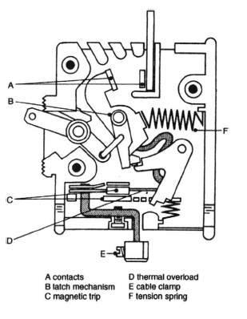
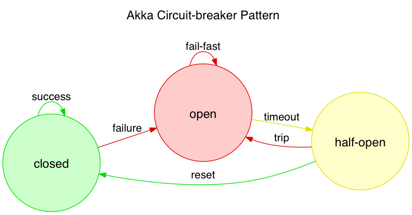

Edd Steel, Platform Team
ls and slsl instead of ls?l isn't sHard field, easy fundamentals
Hard field, easy fundamentals
+---------------+
| |
| Attention |
| |
+------+-+------+
| |
/-----------/ \-----------\
| |
V V
+-----+-----+ +----+----+
| Selective | + Divided |
+-----------+ +---------+
| focused | |unfocused|
+-----------+ +---------+
+---------------+
| |
| Attention |
| |
+------+-+------+
| |
/-----------/ \-----------\
| |
V V
+------+----+ attentional +----+----+
| Selective +<-=----------->+ Divided |
+-----------+ shift +---+++---+
| focused | |||
+-----------+ /--------/|\-------\
| | |
V V v
+---+--+ +----+---+ +--+---+
|Task A| |Person B| |Task C|
+------+ +--------+ +------+

When current crosses a threshold, the circuit is broken and current goes to 0.

A circuit breaker turns a sub-optimal situation into a broken one, demanding manual intervention
it shows you when your attention is so depleted you can't even ls any more
CHOO CHOO!
l isn't sbrew install slbrew install gti (if you git status to remember what you're doing)Thanks for shifting your selective attention